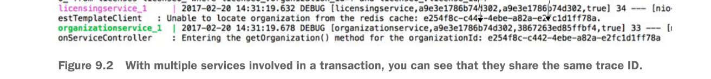

With multiple services involved in a transaction, you can see that they share the same trace ID.
Up to now, we’ve only looked at the logging data produced by a single service call. Let’s look at what happens when you make a call to the licensing service at GET http://localhost:5555/api/licensing/v1/organizations/e254f8c-c442-4ebe-a82a-e2fc1d1ff78a/licenses/f3831f8c-c338-4ebe-a82a-e2fc1d1ff78a. Remember, the licensing service also has to call out to the organization service. Figure 9.2 shows the logging output from the two service calls.
By looking at figure 9.2, you can see that both the licensing and organization services have the same trace ID a9e3e1786b74d302. However, the licensing service has a span ID of a9e3e1786b74d302 (the same value as the transaction ID). The organization service has a span ID of 3867263ed85ffbf4.
By adding nothing more than a few POM dependencies, you’ve replaced all the correlation ID infrastructure that you built out in chapters 5 and 6. Personally, nothing makes me happier in this world then replacing complex, infrastructure-style code with someone else’s code.
9.2 Log aggregation and Spring Cloud Sleuth
In a large-scale microservice environment (especially in the cloud), logging data is a critical tool for debugging problems. However, because the functionality for a microservice-based application is decomposed into small, granular services and you can have multiple service instances for a single service type, trying to tie to log data from multiple services to resolve a user’s problem can be extremely difficult. Developers trying to debug a problem across multiple servers often have to try the following:
- Log into multiple servers to inspect the logs present on each server. This is an extremely laborious task, especially if the services in question have different transaction volumes that cause logs to rollover at different rates.
- Write home-grown query scripts that will attempt to parse the logs and identify the relevant log entries. Because every query might be different, you often end up with a large proliferation of custom scripts for querying data from your logs.